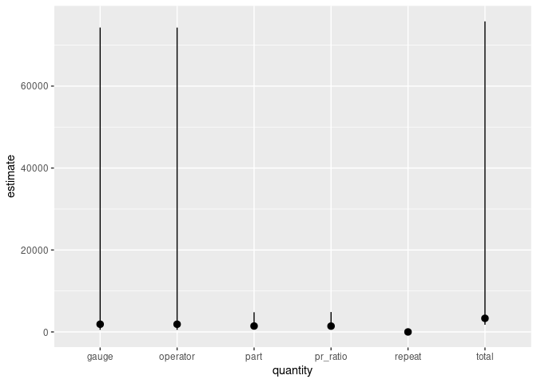

Overview
gaugerr is a package that uses common models to implement Gauge R&R analysis. This package was developed in the tidymodels framework. The user provides the data for the analysis and the choses the function to determine the type of input desired.
Installation
You can install the development version of gaugerr using the code below:
install.packages("devtools")
devtools::install_github("aloy/gaugerr")Usage
There are several ways to use this package as it has different functions depending on the calculations of interest. One highlight function of the package is gauge_rr(). When a data set and specific parameters (part, operator, measurement, interaction, factor1 and factor2) are passed into the function, and it decides the type of analysis needed given the information.
library(gaugerr)
gauge_rr(data1, P, O, Y, interaction=FALSE)
#> quantity estimate lower upper
#> 1 repeat 1.0151 0.759019 1.427511
#> 2 part 1441.0541 681.726616 4803.081613
#> 3 operator 1880.5966 509.776251 74280.900152
#> 4 total 3322.6658 1755.591276 75800.989157
#> 5 gauge 1881.6117 510.792004 74281.916368
#> 6 pr_ratio 1419.6182 622.082051 4859.528589The table above gives information about the point estimator of the quantity and the upper and lower bounds for the confidence intervals. This function will always return an object with these same columns and the object can be plotted to show these values visually.
The figure below plots the information from the table of values. The points are the values of point estimators and the line segments show the range for the upper and lower bounds of the confidence interval.
